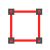
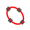
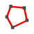
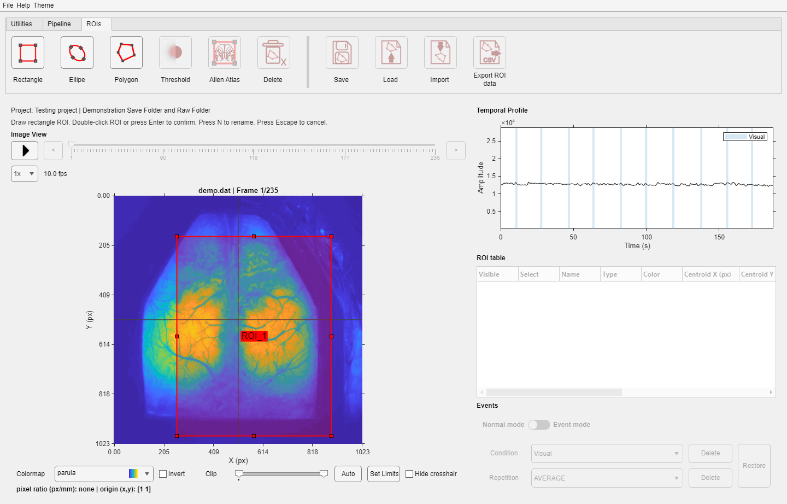
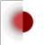
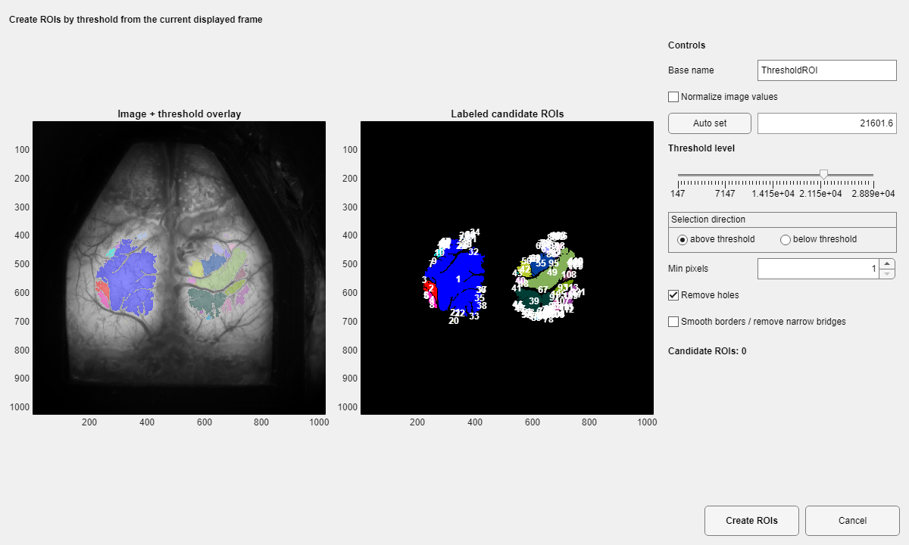
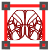
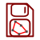
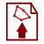

The current ROI tab includes drawing, threshold, Allen Atlas, file, import, and export tools.
Create regions of interest (ROIs) for cortical areas or other structures and compare their signals. Open image data first; a project binding is not required.

, Ellipse
, or Polygon
.
The current ROI tab includes drawing, threshold, Allen Atlas, file, import, and export tools.

Choose Threshold

to preview connected image regions above or below a chosen intensity. Adjust the threshold, minimum size, hole removal, and border smoothing, then choose Create ROIs. See Threshold-based ROIs for details.
Choose Allen Atlas

to select cortical areas from the Allen Mouse Brain Atlas and place their two-dimensional outlines over the current image. Estimated Bregma and Lambda positions appear as a red and green dot, respectively, for placement aid only. This is not automatic anatomical registration. See Allen Atlas selection and placement.Choose Save

to write a .roi file. Choose Load
to replace the current list or append another ROI set.What is saved?
Drawing, editing, thresholding, Boolean operations, and atlas placement remain in memory until Save. A .roi file stores the ROI shapes and their descriptive information; it does not alter the imaging data.
See the full ROI management reference.